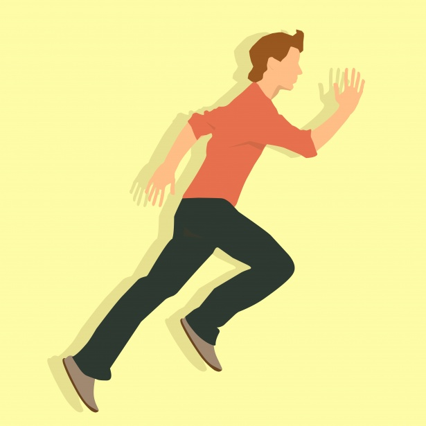

Fitness
Determining whether you're getting the most out of your workout can be a challenge. It's important to find the right balance between pushing yourself too hard or not hard enough. By aiming for your heart rate zone and exercising at the appropriate intensity, you can enhance the effectiveness of your workouts and improve your chances of achieving your fitness objectives.

Aerobic vs. Anaerobic Exercise
Aerobic
refers to physical exercise carried out by the human body under the condition of adequate supply of oxygen.
Aerobic exercise is the type of exercise that keeps heart rate at 60% to 80% of max heart rate per minute,(Max heart rate =220- age) because blood can supply enough oxygen to the heart muscle.
Aerobic exercise is characterized by low intensity, rhythm, and long duration. At this time, the body's energy supply mainly comes from the aerobic metabolism of fat.
Anaerobic
It is the exercise that muscles perform at high speed.
Anaerobic exercise is mostly exercise with high load intensity and strong instant.
Your anaerobic heart rate zone is 80-90% of your max heart rate.
When we engage in very intense sports, the body needs a lot of energy in an instant, and under normal circumstances, aerobic metabolism is not able to meet the needs of the body at this time, so sugar changes to anaerobic metabolism model in order to quickly generate large amounts of energy.
Benefits
Aerobic
It has been shown to benefit the control of blood sugar and blood fat levels, as well as aid in weight loss and improve cardiorespiratory fitness.
- brisk walking
- jogging
- swimming
- cycling
Anaerobic
It aids in building muscle and increasing muscle strength. It also has potential benefits in preventing osteoporosis and improving cardiovascular and pulmonary function.
- Sprinting
- Speinting
- Weightlifting
Tips
Lose fat: Recommended to warm up + anaerobic (30min) + aerobic (20+min)
Improve heart and lungs: 3-4 times a week, 30 minutes or more of aerobic exercise
Improve body strength: Youtuber and Video Recommendations below

Youtube Recommendations

Pamela Reif is a popular YouTuber who specializes in fitness and lifestyle content. Her videos are well-produced, informative, and engaging, making her channel a great resource for anyone looking to improve their health and fitness. Additionally, her positive and motivational attitude is sure to inspire you to take action towards your health and fitness goals.
If you're looking for a fun and energetic way to get fit, I highly recommend checking out The Fitness Marshall! With his infectious dance routines and upbeat personality, The Fitness Marshall makes working out feel like a party. His videos are perfect for anyone looking to get in shape while having fun and learning some killer dance moves along the way. Give it a try and get ready to sweat!